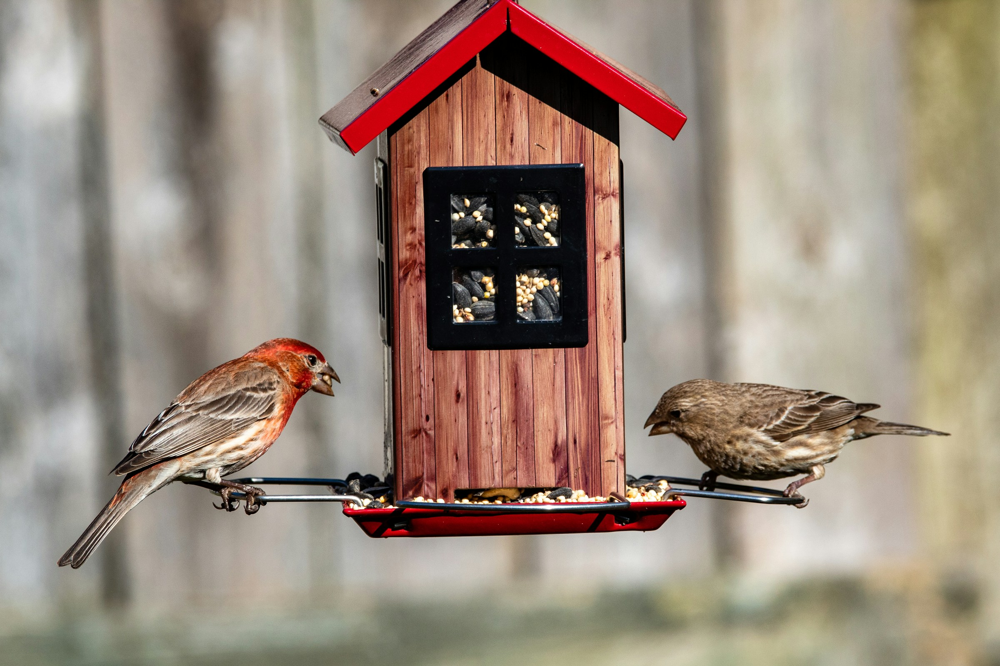

tabs and/or buttons eventuallyv too tired
As gusts hit 25 miles per hour, flight patterns are blown off course
New faces and opportunities emerge for the Fredericksbird community amid blustery pressure gradients.
Cathy Vulture, Buteo Harlan, and Angela Phoenix
Photo taken by Jahanzeb Ahsan.
Robin Banks
Singer Jay “Blue” Corvidae on being the only “normal” bird in an emo family
Caroline Wren and Downy Wood
Birdfeeder etiquette is a relic of the past. Here’s how to get suet in a hurry.
Haus Finch
Ten ways to keep in touch with your migratory friends without leaving town
Happy Hours at feeders change with Daylight Savings Time
Seed refills will happen an hour earlier in accordance with human time adjustments. See the new hours here.
Junko Carolina and Carol Goulding

Photo taken by Joshua J. Cotten.
Tarsiger Cyanurus
The delicate art of avoiding birders during the Great Backyard Bird Count
Author names here
TEST ARTICLE. Here is a pithy little title that tells you things.
Author names here
TEST ARTICLE. Here is a pithy little title that tells you things.